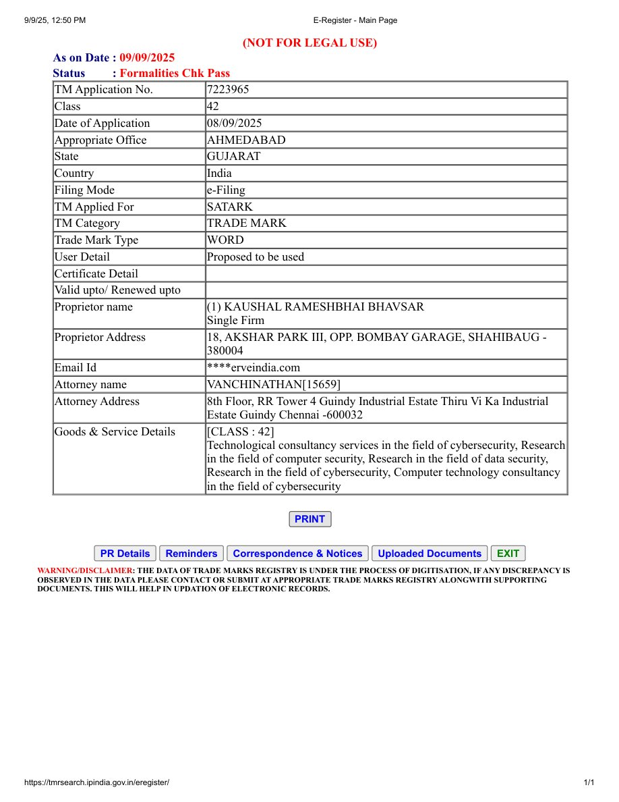

Trademark
Factual details of the Indian trademark application for the word mark SATARK. This page is not legal advice and does not claim that the mark is registered.
Ownership and use
SATARK is a name associated with security research and software created by Kaushal Bhavsar. The Indian word-mark application lists the proprietor as Kaushal Rameshbhai Bhavsar (Single Firm).
Use of the SATARK name, logo, and branding does not grant permission to imply endorsement or official affiliation with the proprietor or this open-source project.
India trademark application
Extract from the Trade Marks Registry e-Register (public record snapshot). Source portal: tmrsearch.ipindia.gov.in/eregister.
- TM Applied For
- SATARK
- TM Application No.
- 7223965
- Class
- 42
- Date of Application
- 08/09/2025
- Status (as on 09/09/2025)
- Formalities Chk Pass
- TM Category / Type
- Trade Mark · Word
- User Detail
- Proposed to be used
- Appropriate Office
- Ahmedabad, Gujarat, India
- Filing Mode
- e-Filing
- Proprietor
-
Kaushal Rameshbhai Bhavsar (Single Firm)
18, Akshar Park III, Opp. Bombay Garage, Shahibaug — 380004 - Attorney
-
Vanchinathan [15659]
8th Floor, RR Tower 4, Guindy Industrial Estate, Thiru Vi Ka Industrial Estate, Guindy, Chennai — 600032 - Goods & Services (Class 42)
- Technological consultancy services in the field of cybersecurity; research in the field of computer security; research in the field of data security; research in the field of cybersecurity; computer technology consultancy in the field of cybersecurity.

Download the saved extract: satark-tm-application-7223965.pdf (also mirrored at assets/satark-tm-application-7223965.pdf in the repository).
Not a registration certificate. This records a trademark application (status: Formalities Check Pass as of the extract date). The registry extract itself warns “NOT FOR LEGAL USE.” No ® symbol is used on this site to imply a granted registration. Wording may need counsel review for commercial use.
Questions about branding or affiliation can be raised through the community channels.